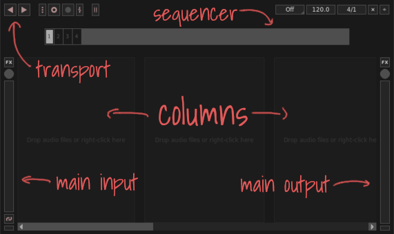
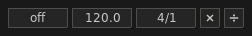

The main window is the part of Giada where you will spend most of the time while live playing. The upper part contains the main menu and several tools for input/output, tempo management and global synchronization. The remaining space is for columns and channels.
Don't worry if you don't understand the behavior of these elements right now; they will be covered more clearly in the next chapters. Let's take a quick glance at the several components that make up the main interface, starting from the main area.
Columns contain channels, which in turn hold audio samples or MIDI events. Channels are one of the building blocks of Giada and that's where the sound comes from — mostly. Their usage will be covered in Performing part 1, Performing part 2, Channels and samples and Channels and MIDI chapters.
You can add as many channels and columns as you want. Columns are used to organize your project and arrange channels according to some logic. For example, you can group drum kits on column 1 and pads on column 2, while voice loops live in column 3. Each column contains a special channel, the column channel, that controls the audio and MIDI signals of all the channels that belong to that column.
These tools take care of audio I/O: input on the left, ouput on the right. The circular knobs control the volume, the vertical bars are meters. Ranging from -60 to 0 dBFS, when a bar is completely full it means that you are recording or playing at the maximum level allowed. If you exceed this limit your sound starts to clip and the meter turns red.
The button located below the input meter is the stream linker . If enabled, it copies the input audio straight to the output channel, in order to obtain a "hear what you're playing" functionality. The  buttons are used to load audio plug-ins both for the input and the output channel. More information in the Audio Plugins chapter.
buttons are used to load audio plug-ins both for the input and the output channel. More information in the Audio Plugins chapter.
The sequencer is a central tool in Giada. It keeps your live performance in sync and is responsible for driving loops, samples and MIDI events. It is managed by the main transport, namely the play/stop button that starts and stops the song and the rewind button that quickly rewinds the sequencer to the first beat.
The main transport features additional elements such as the recording buttons (second group from the left), used to toggle audio recording and action recording. More information in the Recording Actions and Live sampling chapters. The last button is the metronome, useful during a recording session.

A set of tools responsible for beats and tempo management. You can find them grouped in the top right area of the main window. From left to right, the Quantizer aligns the samples on beats and on exact fractions of beats. It works only when the main sequencer is running. More information in the Performing part 1 chapter; The BPM button changes the speed of your performance; the Beats/bars button changes the number of beats and bars of the main sequencer; the Beat operators (last two buttons on the right) dynamically shrink or expand the the total number of beats of the main sequencer.